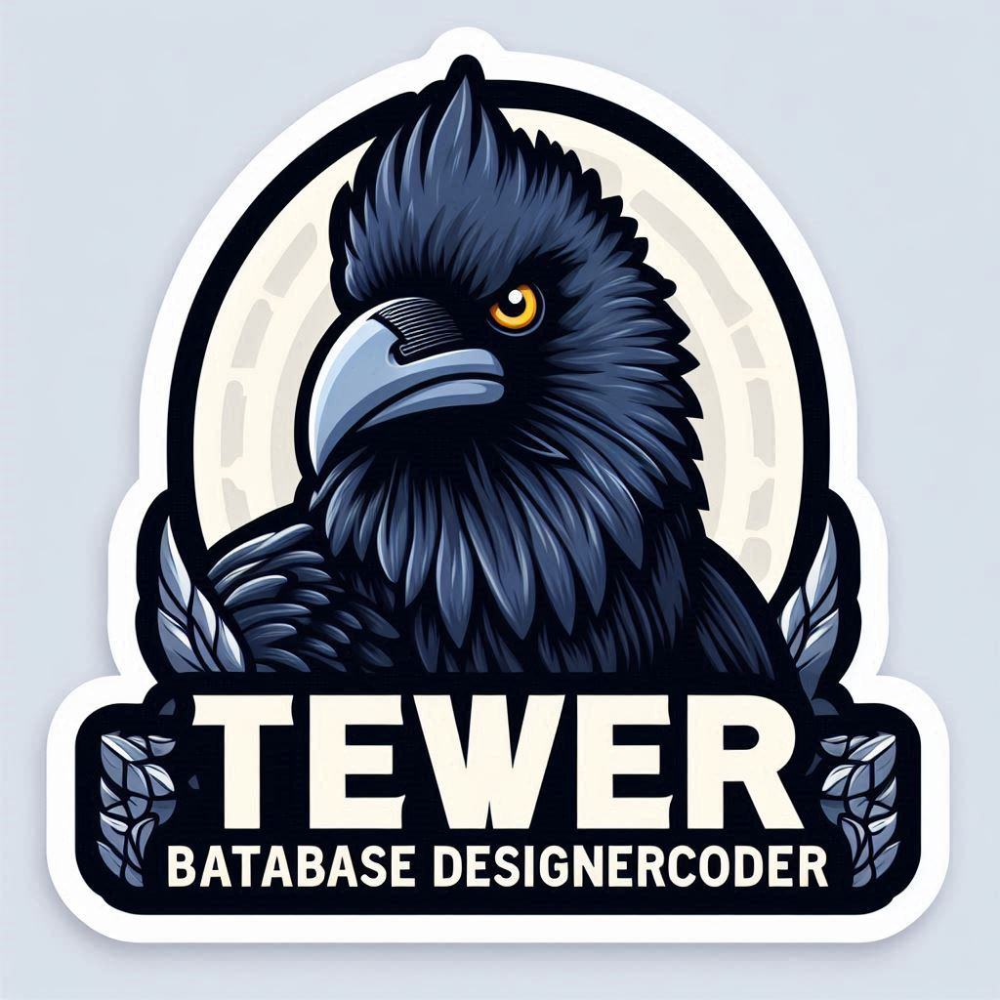

🚀 SQLite-MiniServerAdmin (Tewer BataBase | DataBase)

Welcome to SQLite-Tool-mini! This is a comprehensive guide to help you get started with our amazing project. Whether you're a developer, contributor, or just curious, you'll find everything you need right here.
🌟 Features
- Execute arbitrary SQLite queries: Run any SQLite query you need.
- View table data in a HTML table format: See your data in an easy-to-read format.
- Create new tables: Add new tables to your database.
- Drop existing tables: Remove tables you no longer need.
- Insert new rows: Add new data to your tables.
- Sort table data by column: Organize your data for better analysis.
📦 Installation
Prerequisites
- Ensure you have a compatible version of Python 3.x and SQLite 3.x installed.
Steps
-
Clone the repository:
git clone https://github.com/essingen123/SQLite-Tool-mini.git
-
Navigate to the project directory:
cd SQLite-Tool-mini
-
Run the script using Python:
python sqlite_tool.py
🛠 Usage
- Open a web browser and navigate to
http://localhost:1025/
- Execute queries using the query form or click on the pre-defined buttons
- View table data by clicking on the table names in the left-hand menu